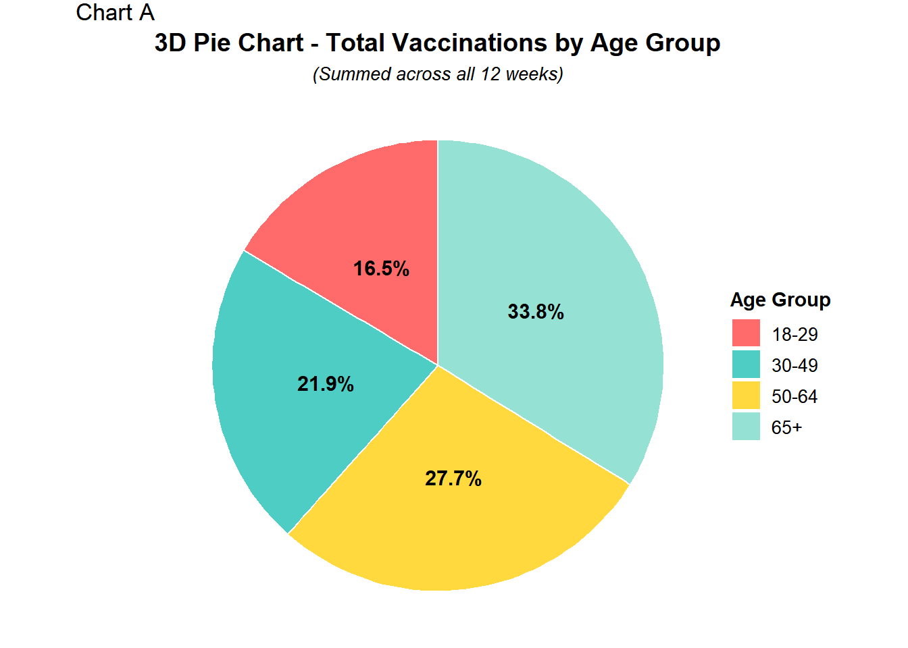
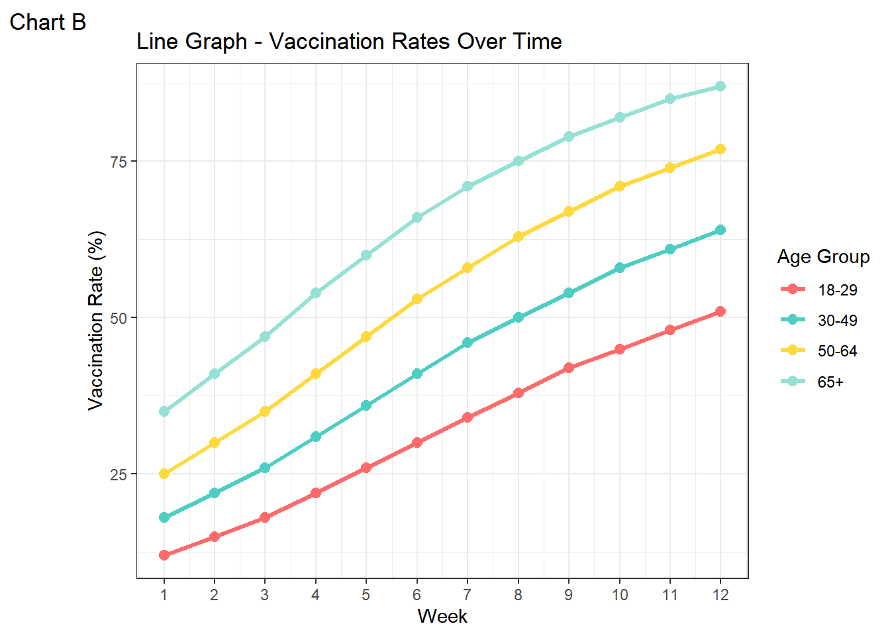
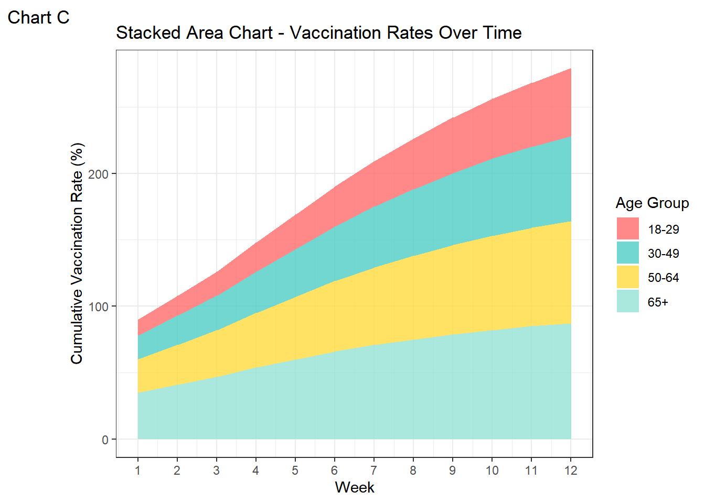
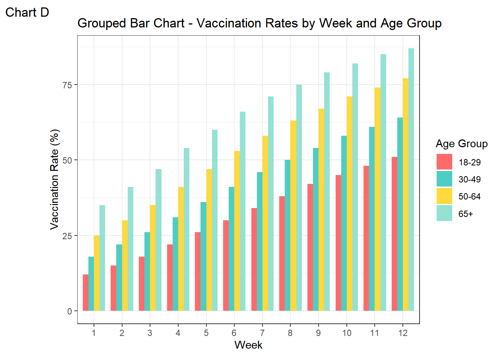
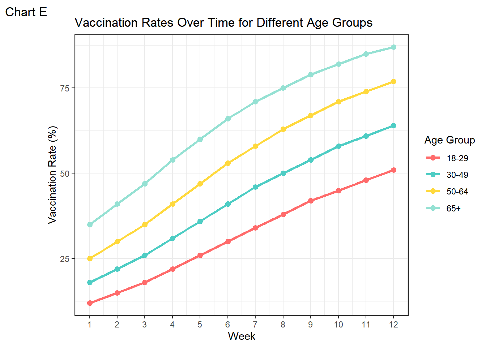

You can see the purpose of this assignment as well as the skills and knowledge you should be using and acquiring, in the Transparency in Learning and Teaching (TILT) document in this repository. The TILT document also contains a checklist for self-reflection that will provide some guidance on how the assignment will be graded.
# Load required librariessuppressPackageStartupMessages({library(ggplot2)theme_set(theme_bw())library(dplyr)library(tidyr)})# Create sample datasetset.seed(123)weeks <-1:12age_groups <-c("18-29", "30-49", "50-64", "65+")# Generate vaccination rate data with realistic patternsvaccination_data <-data.frame(week =rep(weeks, each =4),age_group =rep(age_groups, times =12),vaccination_rate =c(# Week-by-week data for each age group12, 18, 25, 35, # Week 115, 22, 30, 41, # Week 218, 26, 35, 47, # Week 322, 31, 41, 54, # Week 426, 36, 47, 60, # Week 530, 41, 53, 66, # Week 634, 46, 58, 71, # Week 738, 50, 63, 75, # Week 842, 54, 67, 79, # Week 945, 58, 71, 82, # Week 1048, 61, 74, 85, # Week 1151, 64, 77, 87# Week 12 ))# Set factor levels for consistent orderingvaccination_data$age_group <-factor(vaccination_data$age_group, levels =c("18-29", "30-49", "50-64", "65+"))# Define color paletteage_colors <-c("18-29"="#FF6B6B", "30-49"="#4ECDC4", "50-64"="#FFD93D", "65+"="#95E1D3")# CHART A: 3D Pie Chart (showing total vaccinations by age group)# Calculate total vaccinations per age group (sum across weeks)total_by_age <- vaccination_data %>%group_by(age_group) %>%summarise(total =sum(vaccination_rate))# Create pie chart with 3D-like appearance using custom positioningchart_a <-ggplot(total_by_age, aes(x ="", y = total, fill = age_group)) +geom_bar(stat ="identity", width =1, color ="white") +coord_polar("y", start =0) +scale_fill_manual(values = age_colors) +labs(title ="3D Pie Chart - Total Vaccinations by Age Group",tag ="Chart A",subtitle ="(Summed across all 12 weeks)",fill ="Age Group") +theme_void() +theme(plot.title =element_text(hjust =0.5, size =14, face ="bold"),plot.subtitle =element_text(hjust =0.5, size =10, face ="italic"),legend.position ="right",legend.title =element_text(size =11, face ="bold"),legend.text =element_text(size =10) ) +# Add percentage labelsgeom_text(aes(label =paste0(round(total/sum(total)*100, 1), "%")),position =position_stack(vjust =0.5),size =4, fontface ="bold")# CHART B: Line Graph - Vaccination Rates Over Timechart_b <-ggplot(vaccination_data, aes(x = week, y = vaccination_rate, color = age_group, group = age_group)) +geom_line(linewidth =1.2) +geom_point(size =2.5) +scale_color_manual(values = age_colors) +scale_x_continuous(breaks =1:12) +labs(title ="Line Graph - Vaccination Rates Over Time",tag ="Chart B",x ="Week",y ="Vaccination Rate (%)",color ="Age Group")# CHART C: Stacked Area Chart - Vaccination Rates Over Timechart_c <-ggplot(vaccination_data, aes(x = week, y = vaccination_rate, fill = age_group)) +geom_area(alpha =0.8, position ="stack") +scale_fill_manual(values = age_colors) +scale_x_continuous(breaks =1:12) +labs(title ="Stacked Area Chart - Vaccination Rates Over Time",tag ="Chart C",x ="Week",y ="Cumulative Vaccination Rate (%)",fill ="Age Group")# CHART D: Grouped Bar Chart - Vaccination Rates by Week and Age Groupchart_d <-ggplot(vaccination_data, aes(x =factor(week), y = vaccination_rate, fill = age_group)) +geom_bar(stat ="identity", position ="dodge", width =0.8) +scale_fill_manual(values = age_colors) +labs(title ="Grouped Bar Chart - Vaccination Rates by Week and Age Group",tag ="Chart D",x ="Week",y ="Vaccination Rate (%)",fill ="Age Group")chart_achart_bchart_cchart_d

(a) Percentage of total vaccinations summed across 12 weeks by age group. Older age groups (65+) account for the largest share, followed by 50-64, 30-49, and 18-29.

(b) Vaccination rate (%) by week for each age group. All age group’s rates increase steadily. Older groups remain higher across all 12 weeks and all four groups peak at week 12.

(c) Cumulative vacccination rates (%) over time by age group. In the early weeks, older groups dominate. By week 12, younger groups have increased, but older groups still tend to contribute to the cumulative vaccine rate the most.

(d) Weekly vaccination rates (%) by age group. Each age group’s bar shows the same pattern, higher wekkly rates for older age groups with all groups increasing to a maximum at week 12.
Figure 1: Four different representations of COVID vaccination rates.
Edit the chunk options above to produce helpful and descriptive captions and alt-text for each chart. Every chart you include in a document should be referenced in the text (preferably using a cross-reference) and should have a helpful caption and include at least short alt-text descriptions using the fig-alt quarto option.
Resources:
Image Accessibility Generator - This is a great tool but I often have to customize the output. I usually use the long text for image descriptions, which is not best practice but tends to work better than many of the other options available within the quarto ecosystem.
Using the grammar of graphics, identify the geom, mappings, stat, positions, coordinate systems, and transformations for each graphic. Fill in the table below accordingly, leaving any cells which do not apply to the chart blank. If a mapping is a function of a statistic, fill in the statistic function from ggplot2 and indicate the mapping using the appropriate after_stat variable.
Grammar of graphics mappings for the four charts
Chart
Geom
X mapping
Y mapping
Color mapping
Fill mapping
Stat
Position
Coord System
Transform
A
bar
(none)
total vaccinations
“white”
age group
identity
stack
polar
stacked bar to pie chart via coord_polor, percentages are calculated from the each age group’s totals: round(total/sum(total)*100, 1), “%”)
B
line, point
time
vaccination rate (already a percentage)
age group
(none)
identity
identity
cartesian
(none)
C
area
time
(cumulative) vaccination rate
age group
identity
stacked
cartesian
y-axis represents the cumulative total, the y mapping is used to “stack” each age group’s vaccination rate and graph it as a cumulative vaccination rate
D
bar
time
vaccination rate
(none)
age group
identity
dodge
cartesian
(none)
Examine each chart and determine whether it effectively communicates changes in vaccine rates over time across different age groups. If the chart is inappropriate for that comparison, explain why; if it is appropriate but not optimal, explain what you would change.
Chart A does an ok job at communicating the percentage of each age group that has been vaccinated. That is where its accomplishments end. It doesn’t really communicated changes in vaccine rates over time across different age groups. The only “time variable” in the graph is the label that that the totals were summed for the 12 weeks, this isn’t appropriate to capture any changes during those 12 weeks. It may be hard for some to understand that the chart isn’t saying ~1/3 of people aged over 65 are vaccinated, but it is instead saying that out of all total people vaccinated, 1/3 of those people are aged over 65.
Chart B clearly shows the vaccination rate of each age group over 12 weeks. It is simple to notice that at the start of the first week just how low the vaccination rate was for each age group and how the vaccine rate grew over time. One small thing (that doesn’t really bother me at all) is that the points on the graph only serve to point out the week, which some may view as pointless, and having these points as the number of weeks increases and some age groups start to overlap/intersect, the points may add to a lot of clutter.
Chart C can be very confusing to the average person. It can be easy for someone to misinterpret the graph and mistake age group 18-29 to receiving the most vaccines and vice versa for age group 65+. You are supposed to look at the area of each age group, rather than the height, and for that I think it doesn’t do a great job showcasing the vaccination rate over time for each age group.
Chart D does a good job at differentiating each age group and their vaccination rate over the course of 12 weeks. The only problem is that time is a continuous variable, so if the x-axis was created using dates and not “Week 1, Week 2, Week 3…”, there could be some information lost or simplified during the time between those weeks.
Examine each chart and critique the use of Gestalt principles of grouping. What principles apply? Are they used effectively?
Closure and Similarity
The simplicity of the pie graph is that it is a circle cut into parts and the biggest piece represents the biggest piece. Closure groups these pieces as one big circle. Similarity is used effectively as each age group is given their own distinct color to differentiate each other.
Continuation and Similarity
Continuation is effectively used via each continuous line, making each line their own single object. Similarity enforces each continuous line by coloring each line distinctly.
Similarity, Proximity, Closure?
Similarity is used well to have each age group be different from each other through colors. If the goal was to show the cumulative vaccination rate across all age groups, Closure and Proximity work well to group the four age groups as one. This however, makes it slightly difficult to compare exact values for each age group as they are stacked vertically.
Proximity, Similarity, and Continuity
The grouped bars use proximity to show groups on the same week, while the colors of each bar uses similarity to make each age group unique and easy to tell apart. Having each age group in the same order in each group bar is an effective use of continuity to help make comparisons between age group per week. However, as more age groups or weeks increase, having more bars can make the graph cluttered.
Consider the “messages” you might want viewers to take away from this data and the visuals you generate.
Brainstorm 2-3 reasonable messages
The proportion of each age group that became vaccinated increased steadily over this 12 week period.
The more older the classification of an age group, the higher the vaccination rate.
By the 12th week, at least half of every age group has been vaccinated.
What do you think the most important message is from this data set?
Older age groups, especially those aged 65+, had the highest vaccination rates, and vaccination rates increased across all age groups.
Which comparisons do you want to make easier for participants to perform?
The vaccination levels between age groups at any given week
The rate of change in vaccination rates over time within and between age groups
What obstacles do you expect to encounter designing a chart to facilitate these comparisons?
Minimizing misinterpretation
Providing the right amount of information without cluttering the chart
Balancing detail and simplicity
Making the visualization accessible for all viewers.
Considering your answers to the questions above, create your own version of the chart that minimizes cognitive load and maximizes interpretability. Explain the changes that you made and why they improve the chart compared to the ones generated by Claude.
ggplot(vaccination_data, aes(x = week, y = vaccination_rate, color = age_group, group = age_group)) +geom_point(size =2.3) +geom_line(linewidth =1.2) +scale_color_manual(values = age_colors) +scale_x_continuous(breaks =1:12) +labs(title ="Vaccination Rates Over Time for Different Age Groups",tag ="Chart E",x ="Week",y ="Vaccination Rate (%)",color ="Age Group") +theme_bw()

Vaccination rate (%) by week for each age group. All age group’s rates increase steadily. Older groups remain higher across all 12 weeks and all four groups peak at week 12.
My chart, Chart E is almost a one-to-one copy of Chart B, the only thing different is that the theme was changed to black and white to better contrast the colors of the age groups.
2 Choose Your Own Adventure
Claude used fake data, but we have access to the real deal, and I’ve downloaded a csv to simplify the process.
Of course, the CDC only tracks number of vaccines, not the overall vaccination rate.
2.1 Task 1
Augment this data with census estimates of the population size for each age group. In either case, you may need to do a bit of inference/subtraction to get the counts for the age brackets used by the CDC. Provide reproducible code that generates a population table for 2023 and 2024 with the appropriate counts for each age bracket provided by the CDC.
Options:
Use the Census QuickFacts page https://www.census.gov/quickfacts/
national_population_data %>%filter(year =="2023"| year =="2024") %>%group_by(age) %>%count()
# A tibble: 30 × 2
# Groups: age [30]
age n
<chr> <int>
1 .10 to 14 years 6
2 .14 to 17 years 6
3 .15 to 19 years 6
4 .15 to 44 years 6
5 .16 years and over 6
6 .18 to 24 years 6
7 .18 to 64 years 6
8 .18 years and over 6
9 .20 to 24 years 6
10 .25 to 29 years 6
# ℹ 20 more rows
census_data <- national_population_data %>%mutate(age =# the period at the beginning was bothering mestr_remove(age, "\\."),age =str_trim(age) ) %>%filter( age =="18 years and over"|# 18+ age =="18 to 24 years"| age =="25 to 29 years"|### 18 - age =="30 to 34 years"| age =="35 to 39 years"|### - age =="40 to 44 years"| age =="45 to 49 years"|### - 49 age =="50 to 54 years"| age =="55 to 59 years"| age =="60 to 64 years"|# 18-64 and 50-64 age =="65 years and over"|# 65+ age =="75 to 79 years"| age =="80 to 84 years"| age =="85 years and over"# 75+ ) %>%mutate(year =as.numeric(year), sex =as.factor(sex),population_size =as.numeric(population_size),age =# I should have done this step 1st :'(# don't want to do the work from last step again so I'll leave it like thisstr_replace(age, " to ", "-"),age =str_remove_all(age, "[a-z]"),age =str_trim(age),age =case_when( age =="18"~"18+", age =="65"~"65+", age =="85"~"85+", T ~ age ) )%>%arrange(age) %>%select( age, year, month, sex, population_size )# THIS DID NOT WORK NEED TO DUPLICATE ROWS SOMEHOW TO WORK# %>% # mutate(# age_group = # case_when(# (age == "18-24" | age == "25-29" | # age == "30-34" | age == "35-39" |# age == "40-44" | age == "45-49") ~ "18-49",# (age == "18-24" | age == "25-29" | # age == "30-34" | age == "35-39" |# age == "40-44" | age == "45-49" | # age == "50-54" | age == "55-59" | # age == "60-64") ~ "18-64",# (age == "50-54" | age == "55-59" | # age == "60-64") ~ "50-64",# (age == "60-64" | age == "65-69" | # age == "70-74") ~ "60-74",# (age == "75-79" | age == "80-84" | # age == "85+") ~ "75+",# T ~ age# )# ) %>% # group_by(year, month, sex, age_group) %>% # summarise(# total_population = sum(population_size)# ) %>% # ungroup() %>% # select(age_group, year, month , sex, total_population)
age_group_map <-function(age) { groups <-c()if (age %in%c("18-24","25-29","30-34","35-39","40-44","45-49","50-54","55-59","60-64","65-69","70-74","75-79","80-84","85+")) groups <-c(groups, "18+")if (age %in%c("18-24","25-29","30-34","35-39","40-44","45-49")) groups <-c(groups, "18-49")if (age %in%c("18-24","25-29","30-34","35-39","40-44","45-49","50-54","55-59","60-64")) groups <-c(groups, "18-64")if (age %in%c("50-54","55-59","60-64")) groups <-c(groups, "50-64")if (age %in%c("60-64","65-69","70-74")) groups <-c(groups, "60-74")if (age %in%c("65-69","70-74","75-79","80-84","85+")) groups <-c(groups, "65+")if (age %in%c("75-79","80-84","85+")) groups <-c(groups, "75+") groups }census_expanded <- census_data %>%mutate(age_group =map(age, age_group_map) ) %>%unnest(age_group) %>%group_by(year, month, sex, age_group) %>%summarise(total_population =sum(population_size) ) %>%ungroup() %>%mutate(age_group =as.factor(age_group) )
`summarise()` has grouped output by 'year', 'month', 'sex'. You can override
using the `.groups` argument.
# A tibble: 7 × 5
# Groups: age_group, total_population [7]
year month sex age_group total_population
<dbl> <chr> <fct> <fct> <dbl>
1 2024 2024 Both 18+ 231533306
2 2024 2024 Both 18-49 143650318
3 2024 2024 Both 18-64 205798350
4 2024 2024 Both 50-64 62148032
5 2024 2024 Both 60-74 21301797
6 2024 2024 Both 65+ 25734956
7 2024 2024 Both 75+ 25734956
Joining for vaccination rate
## Since the CDC only has data for years 2023, 2024, and 2025,## I am filtering my census data for years 2023 and 2024 ## (There is no census data for 2025)weekly_cumulative_vaccines_administered_data <- weekly_cumulative_vaccines_administered_data %>%rename(age_group = Age_Group) %>%mutate(age_group =as.factor(age_group) )vaccination_rate_data <-census_expanded %>%filter(year =="2024"| year =="2023") %>%select(year, sex, age_group, total_population) %>%inner_join( weekly_cumulative_vaccines_administered_data, by ="age_group", suffix =c("_census", "_cdc"), relationship ="many-to-many" ) %>%filter( year == MMWR_Year, Setting =="Combined" ) %>%mutate(vaccination_rate = Doses / total_population *100,cumulative_vaccination_rate = Cumulative_Doses / total_population *100,Week_ID =ymd_hms(Week_ID) )
disgusting messy code fold
2.2 Task 2
Use the real data to generate the plot you created in 6. How does the real data change the appearance/message of the plot? Does anything get easier or more difficult?
Weekly Vaccination rate (%) over time for each age group. The weekly rate seems to spike during the fall season for both years. Two major peaks happen during the fall and winter months, with one small peak in the month of March in 2024.
How does the real data change the appearance/message of the plot?
The message that this plot seems to say is that people seem to get their COVID-19 vaccine updated more during a certain time of the year. Older people still tend to have a higher rate, but now we have an age group for those 75+, and in that group the rate is smaller than the age groups 60-74 and 65+, ending the trend that older age groups tend to consistently have higher vaccination rates.
In the fake data, Claude may have listed the vaccination rate as the cumulative vaccination rate instead. In the real data, the vaccination rate is the proportion of people that got vaccinated that week. You’d have to use the cumulative vaccination rate to get a plot similar to Claude’s plots.
Does anything get easier or more difficult?
There are over 52 weeks being used in the x-axis, if each week had its own tick marker, things would get messy quick. Also, since this is real data, instead of using labels such as Week: 10, 20 , 30…, I used the Date: 2023-10-01…, to let the reader know what time the data is from.
With 7 lines for each age group given by the CDC, things do feel a bit cluttered. Also, the dates had to be aligned in a way that they do not overlap with each other visually.
2.3 Task 3
What annotations would you want to add to your chart? You may be able to find relevant information about e.g. approval dates of vaccines at immunize.org’s Vaccine Timeline. Add at least one annotation to your chart, but balance utility with clutter.
I’d like to find information that may explain the two peaks in Figure 3. They both seem to happen around September. Now, one may assume this could be just because of school beginning, but this data deals with adults, and more importantly the peaks are for people over 65+!
From my findings, the information that seems to be the cause of the spikes in the weekly vaccine rate in 2023, is not in the range of the data collected. :(
CDC recommends everyone 6 months and older get an updated COVID-19 vaccine. Updated COVID-19 vaccines from Pfizer-BioNTech and Moderna will be available later this week. September 12, 2023
FDA approves and authorizes emergency use of updated mRNA vaccines (Moderna, Pfizer) for 2023-24. The updated mRNA vaccines are each approved for individuals 12 years of age and older and are authorized under emergency use for individuals 6 months through 11 years of age. Bivalent Moderna and Pfizer-BioNTech COVID-19 vaccines are no longer authorized for use in the United States. September 11, 2023
For 2024 however, we have the following info and dates:
ACIP recommends use of the 2024-25 COVID-19 vaccines for persons six months and older. September 10, 2024
FDA approved and granted emergency use authorization (EUA) for updated mRNA COVID-19 vaccines (2024-2025 formula) manufactured by Moderna and Pfizer. August 22, 2024
This could be useful, but in 2024, it looks like things starting to pick up very early August.
Annotation Adding
important_dates <-data.frame(date =c('September 11, 2023',# 'September 12, 2023', for a less cluttered graph # I'll only include one date for each year# 'September 10, 2024','August 22, 2024' ),label =c("CDC: Everyone get updated COVID-19 vaccine*",# 'FDA approves and authorizes emergency use of updated mRNA vaccines (Moderna, Pfizer) for 2023-24. Older vaccinesare no longer authorized for use in the US.',# 'ACIP recommends use of the 2024-25 COVID-19 vaccines for persons six months and older.','FDA: Granted EUA on new COVID-19 vaccine**' ) ) ; important_dates$date <-mdy(important_dates$date)
Weekly Vaccination rate (%) over time for each age group. The weekly rate seems to spike during the fall season for both years. Two major peaks happen during the fall and winter months, with one small peak in the month of March in 2024. The two major peaks align just after an announcement by the CDC in 2023 and the FDA in 2024 where both suggest or approve for individuals to get an update COVID-19 vaccine.
One little problem I have is that the data is from 2023/09/16-2024/12/28, but the first annotation is at 2023/09/11 which is outside the range of the data. It can lead to some misinterpretation. I don’t know how to fix this as there is not data given.
2.4 Task 4
How would you modify this chart if your goal was to compare vaccination rates for each age group in 2023 and 2024? Explain your answer, highlighting how your modifications would reduce the cognitive load of making the comparison of interest.
First off, I’d need the CDC data for all of 2023.
I would go about this in two ways:
Make one line chart for each age group comparing their rates from years 2023 and 2024
If we still wanted all seven age groups, this would mean 7 graphs in total
However, that is if we still wanted all seven age groups
The x-axis would be the month, the y-axis the vaccination rate
There would be two lines on one chart, grouped and colored by the age group and year
Ex. Graph 1 would be a line chart comparing the rate for 18+ year olds and there would be two lines, one for the rate in 2023 and other for the rate in 2024
This would allow for easier direct comparisons between the same age groups and the previous year
Or…
Make one chart for each year (2023 and 2024) that compare the rates of form each age group
Similar to the charts above like Figure 3., except now each year gets their own chart
The x-axis would be the month, the y-axis would still be the vaccination rate
There would be 7 lines on one chart, one for each age group
This would be harder to view the differences of each specific age group, but as a whole it would be easier to see which year had the higher (or lower) vaccination rate
If my goal was to compare vaccination rates for each age group, specifically each age group compared to themselves, I would go with a line chart like Figure 3., similar to the first one I explained above:
vaccination_rate_data %>%filter(sex =="Both") %>%filter(MMWR_Week >=37) %>%ggplot(data = ., aes(x =as.factor(MMWR_Week), y = vaccination_rate ) ) +geom_line(aes(color =as.factor(MMWR_Year), group =as.factor(MMWR_Year)), linewidth =1.2) +# geom_vline(# data = important_dates, # aes(xintercept = date), # linetype = "dashed",# color = "black",# linewidth = 0.8,# alpha = 0.7# ) +# geom_text(# data = important_dates,# aes(x = date,# y = 0,# label = label),# angle = 90,# vjust = -1,# hjust = -0.2,# color = "black",# size = 2.4# ) +# scale_color_manual(values = age_colors) +scale_x_discrete(breaks =c(37, 40, 43, 46, 49, 52) ) +labs(title ="Weekly COVID-19 Vaccination Rates for Different Age Groups",subtitle ="in 2023 and 2024",tag ="Figure 3.",x ="MMWR_Week",y ="Weekly Vaccination Rate (%)",color ="Year",# caption = "*CDC recommends everyone 6 months and older get an updated COVID-19 vaccine, 2023/09/11.\n **FDA approved and granted emergency use authorization (EUA) for updated mRNA COVID-19 vaccines, 2024/08/22." ) +# theme(# axis.text.x = element_text(angle = 0, hjust = 0),# plot.caption = element_text(hjust = 0, size = 7)# ) + facet_wrap(~age_group)
To reduce clutter, I would like to (if possible) to remove one age group, I think the group 18-64 is the easiest to remove as it overlaps into 5 other age groups.
I will say, having MMWR_Week may lead to confusion, so I would also covert MMWR_Year and MMWR_Week as dates, in order to have the x-axis be the month of each year.
2.5 Task 5
How would you use your statistical training to test and visually highlight any statistically significant differences? Explain. You do not have to actually implement any statistical testing to answer this question.
If my question was whether each age group had significantly different vaccination rates during the 2023-2024 COVID-19 season, I would first calculate the average vaccination rate for each group across the 2023-2024 COVID-19 season. Then I would use a pairwise t-test or an ANOVA table to test wheter the differences in means between age groups are statistically significant.
In order to visually highlight any statistical differences, I would make a bar chart, each bar would correspond to each age group and the y-axis would be the average vaccination rate.